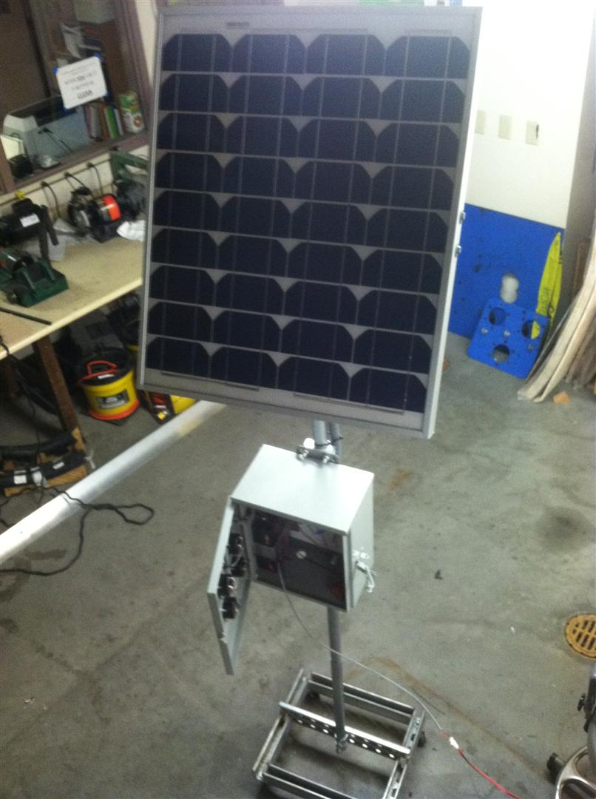

Michael Altamirano
Systems Engineer | Site Reliability Engineer | Data & ML Engineer
Download Resume (PDF)About Me
I'm a Systems/Reliability Engineer with 25+ years of experience building reliable systems—from maintaining NASA's Deep Space Network, to 12+ years in power semiconductor reliability at International Rectifier/Infineon, to 13 years managing large-scale infrastructure at DirecTV serving 21 million subscribers.
My technical foundation spans hardware validation (MOSFETs, IGBTs, GaN technologies), enterprise infrastructure (1,000+ server environments), and modern cloud platforms (AWS, Docker, Kubernetes). I bring a deep appreciation for system reliability, rigorous testing methodologies, and safety-critical design.
Currently, I'm an Electronics Engineer at Leidos, supporting the FAA's National Airspace System modernization—designing system integration packages for NEXCOM Radios, Air-to-Ground Protocol Converters, and Airport Cable Loop infrastructure. I'm also actively building skills in data engineering and ML operations.
What I'm Working On
- Completing Data Engineering Zoomcamp 2026 (Docker, SQL, Terraform)
- Peer reviewer for ML Zoomcamp 2025 and AI Dev Tools Zoomcamp 2025
- Recently completed ML Zoomcamp 2025 (computer vision, deployment, orchestration)
Recent Projects
ML Model Registry & Deployment Dashboard
Full-stack application for managing and deploying machine learning models with a React frontend and FastAPI backend, deployed on Railway.
End-to-End ML Pipelines
Production-ready machine learning pipelines with Docker and Kubernetes orchestration, implementing best practices for reproducibility and scalability.
Transfer Learning Systems
Computer vision projects implementing transfer learning for image classification and human activity recognition with state-of-the-art models.
Real-Time Collaborative Platform
WebSocket-powered platform enabling real-time collaborative code editing with synchronized state across multiple users.
AdMedia, LLC - Video Entertainment Drive In
MBA capstone business plan for AdMedia, LLC, a startup deploying video display advertising systems at Sonic Drive-In franchises. The system uses 15 video monitors and a computer server per location to entertain customers, up-sell menu items, and display partner advertising while customers wait. Included marketing plan, financial projections, operations plan, and rollout strategy. Keller Graduate School of Management GM600, Fall 2010.
Solar Panel Charging Circuit with Battery
Designed and built a solar-powered battery charging station using a 40W photovoltaic panel feeding into a Buck (step-down) converter to safely charge a 6V 12Ah lead acid battery. Included circuit design, simulation, and physical construction with enclosure and monitoring gauges. CSULB EE458, Fall 2011.

Work Experience
Leidos
Dec 2025 - PresentFederal contractor supporting FAA infrastructure
Electronics Engineer
El Segundo, CA · On-site
Provide electronics engineering support to the Federal Aviation Administration (FAA)
Riverstreamz
Oct 2025 - Nov 2025Contract · Los Angeles County Election Support
Field Service Technician
Los Angeles Metropolitan Area · Hybrid
- Provided technical support for LA County's November 2025 Statewide Special Election
- Maintained voting booth equipment at assigned voting locations across the county
- Monitored polling equipment and supported voters with technical issues on-site
DirecTV
Aug 2012 - Feb 2025Digital television entertainment services
Site Reliability Engineer Feb 2017 - Feb 2025
- Managed infrastructure of 1,000+ servers for VOD and Streaming services
- Implemented ActiveMQ queuing solutions for scalability and efficiency
- Developed Bash/Python automation for file management, metadata, and access control
- Led server/blade deployments and cloud migration (AWS, Docker, Kubernetes)
- Automated responses to performance metrics, reducing downtime
Production Engineer Jan 2015 - Feb 2017
- Administered VOD library delivery to millions of subscribers
- Integrated legacy satellite and modern IP-based streaming technologies
- Coordinated troubleshooting for buffering, error codes, and content availability
Application Engineer Apr 2013 - Jan 2015
- Operated nationwide Conditional Access Management Center (CAMC)
- Led encryption and smart card upgrades for 21 million subscribers
- Managed STB transactions during DirecTV/AT&T merger integration
STB Hardware Engineer Aug 2012 - Apr 2013
- Developed test methodologies for transcoder ICs
- Analyzed MPEG transport streams for video delivery optimization
- Integrated hardware interfaces: HDMI, USB, Ethernet, RF
International Rectifier / Infineon
Nov 2000 - Aug 2012Power management technology leader
Device Engineer Oct 2009 - Aug 2012
- Validated DirectFET technology for improved thermal performance
- Evaluated GaN platform for next-generation power semiconductors
- Conducted failure analysis and application-specific testing
Engineering Technician Nov 2000 - Oct 2009
- Performance testing on MOSFETs, IGBTs, and diodes
- Designed specialized test stations for product validation
- Supervised second shift operations
Earlier Experience
1996 - 2000- Arroyo Optics - Fiber/Chamber Technician (1999-2000): Fiber optic coupler testing and precision splicing for telecom
- Ortel Corp - Fiber/RF Technician (1997-1999): RF testing, frequency response analysis, EPROM programming
- Allied Signal / JPL - Computer Technician (1996-1997): Maintained computer systems for NASA's Deep Space Network
Technical Skills
Cloud & Infrastructure
- AWS (EC2, S3, VPC, IAM)
- Docker
- Kubernetes
- VMware / ESXi
- Terraform
Programming
- Python
- Bash
- SQL
- C++
- Java
Monitoring
- Splunk
- Prometheus
- Grafana
- ActiveMQ
Operating Systems
- Linux (Primary)
- UNIX
- Windows Server
Security
- Vulnerability Management
- CIS Benchmarks / STIG
- Nessus / Qualys
- ISO 9001
Hardware & Testing
- Oscilloscopes
- Spectrum Analyzers
- RF/Analog/Digital Test
- MATLAB / LabVIEW
Education
Master of Science in Electrical Engineering
California State University, Long Beach 2013
Master of Business Administration
Keller Graduate School of Management 2011
BS in Computer Engineering Technology
DeVry University, Long Beach 2010
BS in Electronics Engineering Technology
DeVry University, Long Beach 2009
AS in Electronics and Computer Technology
Don Bosco Technical Institute, Rosemead 1996
Professional Development
AI Dev Tools Zoomcamp 2025
DataTalksClub · Nov 2025 - Jan 2026
- Introduction to AI Development Tools
- End-to-End Project Development
- Model Context Protocol (MCP)
- Capstone Project (Review Completed)
Machine Learning Zoomcamp 2025
mlzoomcamp.com · Oct 2025 - Jan 2026
- Machine Learning for Regression and Classification
- Evaluation Metrics and Model Deployment
- Decision Trees and Ensemble Learning
- Neural Networks and Deep Learning
- Serverless Deep Learning
- Kubernetes for ML deployment
- Midterm Project (Passed)
- Capstone Project (Passed)
Artificial Intelligence (AI) With Data Science
Career Break · Aug 2025 - Oct 2025
- Python programming for data science (NumPy, Pandas)
- Data manipulation, cleaning, and statistical analysis
- Deep learning and neural networks fundamentals
- Image classification and segmentation with CNNs
- Machine learning techniques (supervised/unsupervised)
- Data Science with R Programming
- Hands-on projects with Google Colaboratory
Certifications
- NASA/JPL Certified - Hand Soldering, Wire Wrap, ESD Awareness
- CompTIA A+ Computer Troubleshooting
- Microsoft Certified Professional (MCP)
- Kester Lead Free Hand Soldering
- IRF Measurement System Analysis
- ATI Training - A+, MCSE, CCNA
Credentials
Degrees


Certifications


Contact
Interested in working together? Feel free to reach out.
Los Angeles, CA | U.S. Citizen | Available Immediately